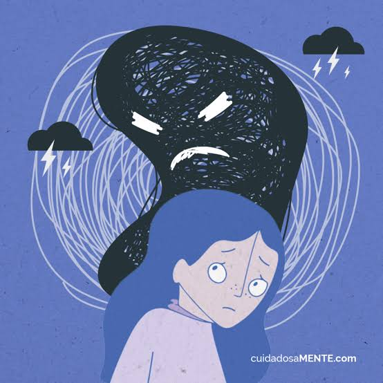
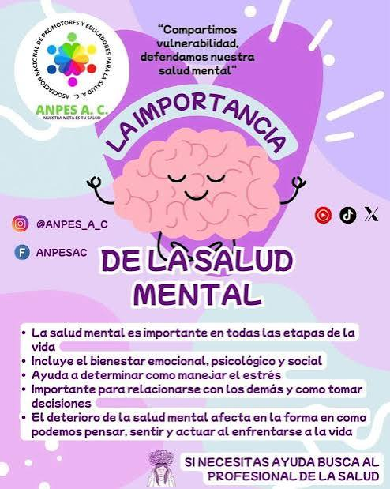
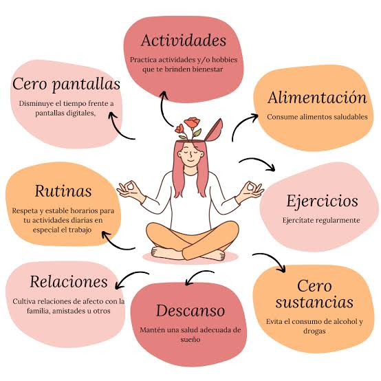
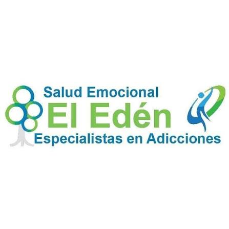

Salud Mental
salud mental es un estado de bienestar emocional, psicológico y social que permite a las personas
gestionar el estrés cotidiano, aprender, trabajar de forma productiva y contribuir a su comunidad.
¿Qué implica la salud mental?
• Más que la ausencia de enfermedades: No se limita a no tener un trastorno mental, sino a mantener un
equilibrio en cómo pensamos, sentimos y actuamos.
Impacto integral: Influye directamente en la salud física, la capacidad de relacionarnos y el desempeño
diario.
Panorama actual en México
Panorama actual en México
• Percepción de bienestar: Solo el 31.1% de la población adulta en México considera que su salud mental es
muy buena o excelente, de acuerdo con datos del Inegi.
• Ansiedad y depresión: El 21.8% de los adultos presenta síntomas de ansiedad y el 13.4% muestra indicios de
depresión.
• Estrés laboral: Cerca del 41% de los trabajadores en el país padece estrés diario en su entorno de trabajo
Señales de alerta (Cuándo buscar ayuda)
• Cambios profundos en el estado de ánimo, el sueño o el apetito que duren más de dos semanas.
• Sensación persistente de abatimiento, irritabilidad, llanto frecuente o pensamientos negativos.
• Dificultad para cumplir con las actividades del trabajo, la escuela o las relaciones personales.
• Aparición de ideas de autolesión o suicidio (requieren atención inmediata).

La ansiedad es un sentimiento de miedo, temor e inquietud. Puede hacer que sude, se sienta
inquieto y tenso, y tener palpitaciones. Puede ser una reacción normal al estrés. Por ejemplo, puede
sentirse ansioso cuando se enfrenta a un problema difícil en el trabajo, antes de tomar un examen o antes de
tomar una decisión importante. Si bien la ansiedad puede ayudar a enfrentar una situación, además de darle
un impulso de energía o ayudarle a concentrarse, para las personas con trastornos de ansiedad el miedo no es
temporal y puede ser abrumadora
Los trastornos de ansiedad son afecciones en las que la ansiedad no desaparece y puede empeorar con el
tiempo. Los síntomas pueden interferir con las actividades diarias, como el desempeño en el trabajo, la
escuela y las relaciones entre personas.
¿Cuáles son los tipos de trastornos de ansiedad?
Trastorno de ansiedad generalizada: Las personas con este trastorno se preocupan por problemas comunes como la
salud, el dinero, el trabajo y la familia. Pero sus preocupaciones son excesivas y las tienen casi todos los
días durante al menos 6 meses
Trastorno de pánico: Las personas con trastorno de pánico sufren de ataques de pánico. Estos son repentinos y
repetidos momentos de miedo intenso sin haber un peligro aparente. Los ataques se producen rápidamente y pueden
durar varios minutos o más
Fobias: Las personas con fobias tienen un miedo intenso a algo que representa poco o ningún peligro real. Su
miedo puede ser por arañas, volar, ir a lugares concurridos o estar en situaciones sociales (conocida como
ansiedad social)
Recomendaciones para mantener una buena salud mental
Lleva un estilo de vida saludable. Hacer ejercicio de manera regular -si es posible, al aire libre- te
ayudará a mantener elevado tu estado de ánimo. Así mismo, aliméntate de manera variada y equilibrada, con
una dieta rica en fruta, verdura y fibra y baja en grasas y azúcares refinados. Toma al menos dos litros de
agua al día y trata de evitar la cafeína, el alcohol y, por supuesto, el consumo de otras drogas.
Cuida la calidad de tu sueño. El descanso reparador es fundamental para sentirse con energía al día
siguiente. Por ello, intenta dormir ocho horas al día y siguiendo siempre unos horarios regulares. Evita las
siestas largas durante el día y trata de reducir la exposición a la luz azul de los dispositivos antes de
irte a dormir.
Mantén la mente ocupada. Practica tus aficiones favoritas o aprende otras nuevas, ya sea en solitario o en
compañía de otras personas. Procura interesarte por tu entorno e involucrarte en el día a día de las
personas que te rodean. Lleva a cabo regularmente actividades que te estimulen.
Permítete experimentar todas las emociones. Una óptima salud mental no significa estar siempre contento,
pero es importante que exista un equilibrio de emociones y plantearse como una señal de alarma que
predominen las negativas y se sostengan en el tiempo.


Dar las gracias ayuda. Diariamente, escribe una lista o repite mentalmente las cosas de la vida por las que
te sientes agradecido y recuerda experiencias positivas que hayas tenido.
Establece metas y prioridades. Fija los objetivos que quieras alcanzar y decide qué es prioritario y qué
puede esperar. Aprende a descartar tareas si empiezas a sentirte sobrepasado y felicítate por todo lo que
logras cada día.
Aprende a gestionar el estrés. Analiza los problemas de una manera lógica: define el problema, haz una lista
con las posibles soluciones y otra de los pros y contras de cada una. En vez de postergarlas o evitarlas,
afronta las situaciones difíciles, ya que dejarán de angustiarte una vez las identifiques y resuelvas.
Reserva momentos para relajarte. Asigna un espacio diario al ocio y al descanso y practica de manera regular
actividades como relajación, meditación, mindfulness o yoga. Te ayudarán a neutralizar la activación
fisiológica del organismo que produce el estrés y te proporcionará un mayor control de las emociones.
Reducir el tiempo que dedicas a los dispositivos electrónicos también puede ser beneficioso.
Relaciónate con los demás. En tu día a día, mantén el contacto con otras personas, ya que socializar y
comunicarnos con nuestro entorno contribuye a aumentar el bienestar.
Pide ayuda cuando la necesites. Si no te sientes bien, acude a un profesional de la salud mental o a tu
médico de cabecera, que podrá ayudarte a identificar el problema y derivarte a un especialista.Tener buenos
hábitos alimenticios
Realizar ejercicio con regularidad
Conservar buenas relaciones interpersonales
Evitar el tabaco y el consumo de alcohol
Dormir como mínimo de 8 horas diarias
Realizar actividades sociales, recreativas, culturales y deportivas
Fomentar el hábito de la lectura: leer enriquece la capacidad de atención e incrementa la memoria, aumenta
la motivación y reduce el estrés
¡No esperes más tiempo, es momento de cuidar tu salud!
Ayuda psicológica gratuita
IMPAS (Instituto Municipal de Prevención y Atención a la Salud): Ofrece consulta psicológica en su sede
principal ubicada en la calle Francisco Xavier Mina #408 (Zona Centro), así como en la Clínica Punta Oriente
(calle Punta Los Alicitos #9320) y en varios centros comunitarios del municipio. Puedes agendar cita
llamando al 072 en las extensiones 2259, 2260 y 2261
Línea de Atención en Crisis (IMPAS): Servicio telefónico gratuito de intervención en crisis disponible las
24 horas del día llamando al (614) 194-02-00
Programa Chidamente (Ichijuv): Brinda sesiones de terapia psicológica gratuitas (presenciales o virtuales)
orientadas al bienestar de los jóvenes.

CAICH Delicias (Calle 7a. Oriente 206-Oriente, Col. Oriente 1): Clínica y centro enfocado en servicios de
salud mental y psiquiatría, con la atención de la Dra. Morayma Licón (psiquiatra). Teléfono: +52 639 166
1311
CISAM (Calle 8va Norte y Avenida Carlos Blake #301, Col. Imperial): Equipo de profesionales especializados en
salud mental y atención clínica. Teléfono: +52 639 501 1059
Salud Mental y Neuromodulación (Av. 2a. Sur 104, Col. Centro): Brinda valoración psicológica y
neuropsicológica, psicoterapia, rehabilitación cognitiva y neuromodulación no invasiva con tDCS.
Teléfono/contacto con cita previa